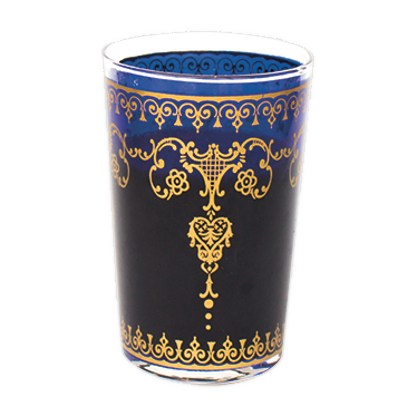
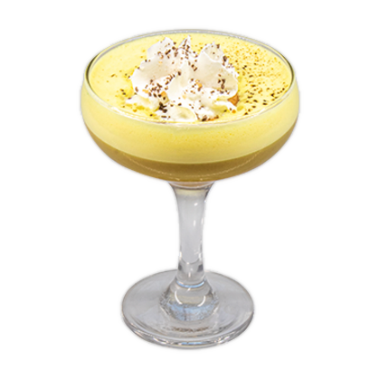
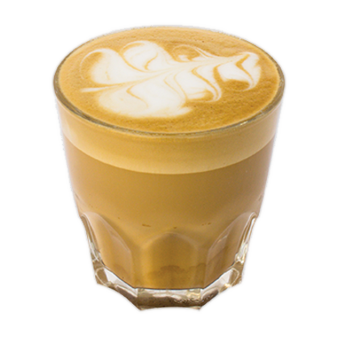
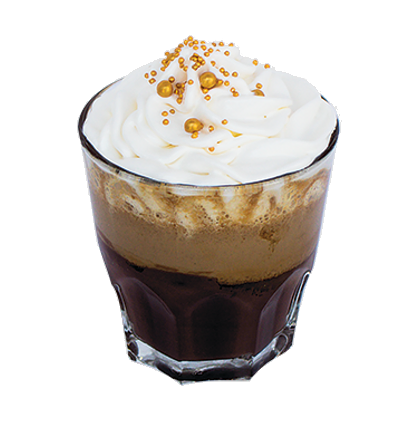
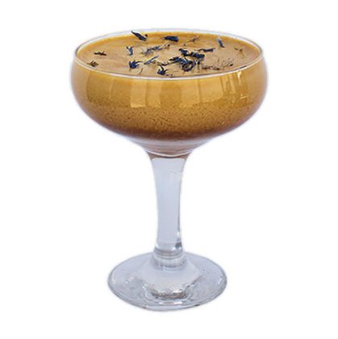
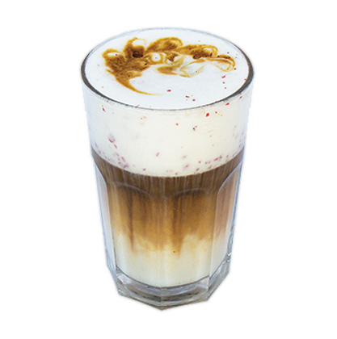

A túl édes latin (főleg argentin és brazil) kávék ellen harcoló „ízesített” amerikai kávék slágerreceptje.
A felgőzölt tejbe sűrű vaníliát kevernek, kis fahéjjal és csipetnyi szerecsendióval.
A Mississippi környéke, vagyis az amerikai déli konyha az édes gesztenye-recept kreációk zászlóshajója.
A karácsony a new orleans-i otthonokban például aligha képzelhető el gyömbéres, gesztenyés sárgarépaszósz nélkül.
A szilveszter este pedig a mississippi gesztenye-kávéval indul. Édes, darabos, sűrű gesztenyében úszó varázslattal.
Az eredetileg orvosságként felirt mogyoróvajat St. Louisban keverték először tejeskávéba, több mint száz évvel ezelőtt.
Tejszínt adtak hozzá, és reszelt csokoládéval egészítették ki (ezt hívták akkoriban francia kifejezéssel brisé-nek).
Mi még narancs-kókuszt is szórunk a tetejére.
A mai Irak területén épített ókori torony nyolc emeletből állt, ezért a mi kávénk is nyolc alkotórészből építkezik.
A tejjel, karamellával és a cukorral készített alap espressoban egymásba gabalyodnak a fűszerek: a gyömbér, a fahéj,
és a szegfűbors, valamint az ital tetején a ropogós tejszín-krokant. Valóságos édenkerti gyönyör!

Sokáig készül, mert őrölt kardamom van benne. Évszázadokon át ez volt az arab tevekaravánok kedvenc itala.
Mi is forró homokban főzzük, úgy mint egykor a beduinok. A szír változatot,
ahogy még a véres polgárháború előtt aleppóban készítették, és ahogy például a szíriában sok időt töltő krimiszerző,
Agatha Christie is szerette.

A legendás india-kutató, Baktay Ervin kalandos élete ihlette ezt a desszertkávét.
Brit és indiai ízvilág, madártej-úszósziget, kávé és vanília koktélospohárban.
Pont olyan egzotikus, mint az egykori gyarmati világ.
A franciák „válasza” az olaszok tejeskávéjára. Csak azért is gőzölt tejjel készül! Ráadásul sok tejjel.
A hosszú kávé és a gőzölt tej egyformán meleg, mert az ízek így keverednek igazán lágyan össze. A tetején hab és fahéj.
Akár tiramisu-kávénak is hívhatnánk!
Évszázadokkal ezelőtt a francia udvari cukrászok az édes-szájú XII. Lajos számára „találták”ki a babapiskótát, a savoiardit.
Nem sokkal később a savoyai hercegségben ez felkerült a habos, rumos-diós kávé tetejére. Folyékony tiramisu!
Sok szegfűszeggel, kis fahéjjal, gyömbérrel (ezt az ottani szultánnak köszönjük), és narancsvirág kivonattal főzött édeskés latte.
Hosszú, lágy, levegős tejeskávé, barátnők pletykapartijaihoz.
A habos, fahéjas, espresso alapú kávé különlegessége leginkább a jégbe fagyott japán szilva turmixszerű elegye,
ami a forró kávét langyossá, az italt pedig krémessé teszi. Kiotóban a lefagyasztott gyümölcsök pépjét hámozatlanul keverik a kávéba,
és annyira népszerű, hogy karácsony táján még az utcán is árulják.

A malajziában, ahol rengeteg japán él, az arrafelé mindennaposnak számító ipoh fehérkávénak ez a japánosított luxusverziója.
Maláj ital japán kávé-technikával tökéletesítve. Édeskés kávészemekből főzött, fehércsokoládéval ízesített, kisméretű latte.
Pörkölt dióval keverik össze, hogy pikáns legyen. A pohár alján ott a csoki, ne felejtsék el kikanalazni!
Tejeskávé - az Oszakai cukrászatok kreatív kísérletezései alapján. Pisztácia pasztát társítunk porított zöld matcha teával,
ezt keverjük a sűrű, tejszínes lattéba. Az eredmény egy izgalmas, mandulás-marcipános ízvilágú kávéital japán csészében szervírozva.

Barcelonai cortado az alapja, vagyis kesernyésre pörkölt (az olasznál hosszabbra főzött) katalán espresso,
leheletnyi tejjel. Ennek a mélyén ölelkezik össze a rum a körtepéppel és a forró csokoládéval.
A latin ital-költeményt sok hab és csillámló csokigömböcskék koronázzák.

Ennek a meleg, tejes italnak már a részletes leírása is költemény, hát még az íze!
Inka égi-virág kávé sárgabarack zselével, kék konkolyból és narancsvirágból.

Ahogy az elnevezésben szereplő „media” szócska is mutatja, ez a kávé tejjel,
közepes hosszúságúra főzve készül, a legújabb riói trend szerint, kókusszal és rózsaborssal felgőzölve.
A rózsabors elnevezése csalóka, mert az íze nem csípős, hanem édeskés, csak a végén emlékeztet kicsit a borsra.
A bajorok világosra pörkölt, citrusos kávéja remekül egybesimul a hideg, olvasztott cukorsziruppal.
Ezt nálunk citromreszelék teszi még inkább pikánssá. A bajorok tejszínhabot tesznek a tetejére, úgyhogy mi is!
Los Angeles-i jeges kókusz-kávé – mogyorós csokikrémmel, és rózsaborssal meghintett habbal.
Ízkavalkád! Pont olyan intenzív és ingergazdag, mint a hollywoodi kasszasikerek.
És pont úgy, mint a legjobb filmek, ez is a végére áll össze – csak most a szánkban.
A jeges „klasszikus”. Krémes espresso és habosított édes tej jeges keveréke.
Az espressot rövidre főzzük, hiszen a jég miután megolvad, úgyis kicsit „meghosszabbítja” a kávét!